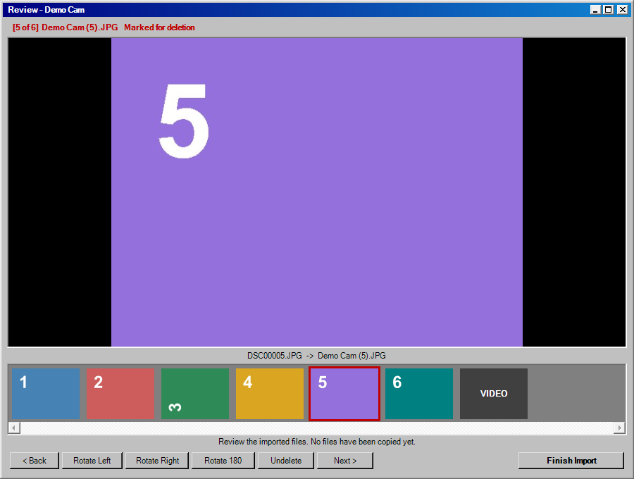

How to set it up, import your cards, and send everything to iCloud Photos safely.
You put a memory card in your computer. Card Drawer works out which of your cameras it came from and copies everything off it the way you set up for that camera:
Sony T7 (1).JPG, Sony T7 (2).JPG… so two cameras never
produce clashing names.You need Windows 10 or 11 and a card reader (built-in, or a cheap USB one). Nothing else has to be installed first. A Mac version is on the way.
Documents\Card Drawer.Card Drawer.bat. The Card Drawer window opens. For one-click
opening from now on, choose File → Create Desktop Shortcut.| Part | What it's for |
|---|---|
| Cards plugged in | Every memory card and USB drive in the PC, and which of your cameras each belongs to. It updates by itself when a card goes in or comes out. |
| Cameras | Your cameras, how each is recognized, and an example of its file names. Double-click one to change its settings; right-click for Practice Run, Move Up / Down and Remove. |
| Activity | What an import is doing right now, with a progress bar. |
| Buttons on the left | Import Now, Import Folder, Add Camera, Camera Settings (Cameras → Camera Properties), Review Photos, Settings, Guide. The same things, and a few more, are in the menus at the top. |
Prefer the keyboard? Tools → Text Menus (or Text Menus.bat) does everything with numbered
questions, and Import Now.bat is a one-click import with no window.
src folder that you, or anyone, can read.The first time, click Set Up. The Card Drawer Setup window asks two things:
Pictures\Card Drawer or click Browse. Each
camera gets a folder here for originals, RAW files and its import history.Click Continue and the Add Camera box opens for your first camera.
You teach it each camera once. Do it with one of that camera's cards plugged in, so it can learn to recognize it. Click Add Camera. The box has four tabs, like a Windows settings sheet; everything has a sensible default.
| Tab | What's on it |
|---|---|
| General | The camera's name (e.g. Sony RX100). Use Card learns from the
plugged-in card (its serial number and the camera model in its photos); Use Folder does the same from a folder
of its photos. Start from a preset fills in settings for a kind of camera; presets that fit your card say
<- fits this card. Recognized by sums up how its cards will be spotted. |
| Recognize | The rules, if you want to change them: this exact card's serial number, the camera model or maker written inside the photos, the file names, a fixed drive letter, and whether this camera should take cards none of your other cameras recognize. |
| Files | Where finished photos go (your library, iCloud Photos, or any folder – for iCloud read section 7 first). File names, with a live example that changes as you choose (table below). Whether the camera's clock is right. |
| Import | Delete from the card after each checked copy (off is the safe choice; when on, a file is deleted only after its copy is checked to be byte-for-byte identical), video conversion, what to do with RAW files, the review, and start without asking. |
File names:
| Choice | Looks like |
|---|---|
| Running count | Sony RX100 (1).JPG, Sony RX100 (2).JPG… and it carries on from the last import |
| Date and time taken | 2026-06-15 14-30-05.JPG |
| Date + running count | 2026-06-15 Sony RX100 (1).JPG |
| Camera's own names | DSC00042.JPG |
| Custom | Mix the pieces yourself, e.g. {year}-{month} {name} {n:4} gives
2026-06 Sony RX100 0001.JPG. The example updates as you type. |
If two files would get the same name (two shots in the same second, say), the second gets _2 added.
Nothing is ever overwritten. Folders are created for you.
Click Add Camera. If you used a card, it offers a practice run: it copies the card into a separate practice folder so you can see the names and dates. The card isn't changed and nothing goes to iCloud.
Double-click the camera in Cameras (or select it and click Camera Settings (Cameras → Camera Properties)). The same four tabs open with its current settings. OK saves them for the next import; Cancel changes nothing.
Got photos already on the PC, like an old backup folder? Click Import Folder. Nothing in that folder is ever deleted.
When you click Import Now, a second window pops up: the photo window.

| Button | Key | What it does |
|---|---|---|
| Next > | Enter, Space or → | Keep this one (saving any turn) and go to the next |
| Rotate Left / Rotate Right / Rotate 180 | L / R / U | Turn the photo. The picture updates straight away. |
| Delete | D or Delete | Mark it for deletion (red frame and banner) and move on. Press again (Undelete) to keep it after all. |
| < Back | B or ← | Back one photo |
| Finish Import | Esc | Finish: deleted ones go to the Recycle Bin, the rest are sent |
Click any thumbnail to jump to it. Closing the window with its × also counts as Done.
Using Text Menus.bat instead? At the end of an import you're asked
Type R + Enter to review the new photos, and the same review window opens.
Incoming folder. Only when the window closes
do they move on to iCloud or your destination folder. That order matters for iCloud: see the next section.Card Drawer doesn't talk to Apple's servers. It hands photos to Apple's own iCloud for Windows app by putting them in the folder that app watches, and that app does the uploading. So iCloud for Windows has to be set up first.
iCloud Photos, with a
Photos folder inside. Apple's documented location is
C:\Users\your name\Pictures\iCloud Photos\Photos.Each camera gets its own folder inside, like iCloud Photos\Photos\Sony T7 Media, so you can find
things on the PC. Don't count on those folder names becoming albums in iCloud: on your iPhone the photos simply
appear in your library, by the date they were taken.
If the menu says iCloud Photos (not found on this PC), your iCloud folder is somewhere else. Choose 3 Somewhere else and browse to it.
Before importing a whole card, use Import Folder on a folder with one or two photos in it, then
check your iPhone's Photos app (or icloud.com/photos) after a few minutes.
| iCloud… | So Card Drawer… |
|---|---|
| Uploads a file the moment it lands in the folder. Apple says edits you make on a PC afterwards don't appear on your Apple devices. | Holds photos in the local Incoming folder until you've had the chance to rotate or delete
them, and only then copies them in. Once a photo is in iCloud, rotate it on your iPhone, not on the PC. |
| Sorts photos by the date stored inside them, not the file's date. | Keeps the real date. For cameras set to "clock is wrong", it writes today's date inside the photo
(and inside MP4/MOV videos), so they don't land years in the past. The untouched original is kept in
Unprocessed Originals. |
| Won't play some video formats (AVI, MPG, MTS, ASF…). | Converts them to MP4 with the date written inside. The original stays in Converted Originals. |
| Counts every RAW file against your storage. | Keeps RAW files in RAW Originals on your PC and sends a full-size JPG. |
| Mirrors deletions. Deleting a photo from the iCloud folder on your PC deletes it from every device. Apple keeps it in Recently Deleted for 30 days. | Never deletes anything from your iCloud folder. Deleting in the review window happens in
Incoming, before iCloud ever sees the photo. |
| Needs room. The free plan is 5 GB. | Can't check this for you. Look in iCloud for Windows to see how much space you have left before a big import. |
| Problem | Try this |
|---|---|
| Photos aren't showing on my iPhone | Open iCloud for Windows: is it signed in, is iCloud Photos on, is uploading paused, is storage full? Big imports can take hours to upload; the PC needs to stay on and awake. |
| Photos show up in the wrong year | That camera's clock is wrong. Double-click it under Cameras → 4 (Dates) → answer N to "clock is right". Already-uploaded photos can be fixed on the iPhone (swipe up on a photo → Adjust). |
| A photo is sideways in iCloud | Rotate it on the iPhone. Rotating the PC copy won't sync. Next time, use the review window before sending. |
| A video didn't upload | Check Settings → 2 Tools: without ffmpeg, AVI/MPG-style videos are copied as-is, and iCloud skips them. |
| "iCloud Photos (not found on this PC)" | Finish Step 1 above, or choose 3 Somewhere else and browse to your iCloud Photos folder. |
Any folder that a sync app watches works the same way: choose 3 Somewhere else as the camera's destination and pick a folder inside your OneDrive (or Google Drive, Dropbox, a NAS share…). The same advice applies: review photos at the end of the import, before they're sent, and do a one-photo test first.
imported_media.csv is open in Excel), it
stops before touching anything, so nothing can be imported twice.Converted Originals for videos,
RAW Originals, and Unprocessed Originals for re-dated or patched photos.Incoming, and imports nothing twice.tests\Stress-Tests.ps1 to see for yourself.imported_media.csv: every file it ever imported, what it
was called on the card, what it's called now, and when. It opens in Excel.| Problem | Try this |
|---|---|
| "No memory card or USB drive found" but the camera is plugged in | Cameras plugged in by USB often appear as a "portable device" with no drive letter, and Card Drawer needs a drive letter. Take the card out and use a card reader. |
| "Another Card Drawer window is importing right now" | Let the other window finish, or close it, then try again. If no other window is open, restart the PC. |
A card shows as [ unknown ] |
No camera claims it yet. Use Add Camera, or double-click the camera → 1 Recognition rules → 1 Learn from a plugged-in card. |
| A card goes to the wrong camera | My cameras → camera → T Test shows which rule claimed it. Move the right camera up the list (U), or give it this card's serial number. |
| A camera stopped being recognized after formatting its card on the PC | Formatting on a computer changes the card's serial number. Re-learn it from the plugged-in card (formatting in the camera usually keeps it). |
| "Some files couldn't be deleted from the card" | Slide the lock switch on the side of the card to unlocked and import again. Already-copied files are recognized, not copied twice. |
| "Photos from an interrupted earlier run" | Normal after a crash or closed window. They were safely copied but not sent yet. Review them, then they go out. |
Settings live in data\config.json next to
Card Drawer.bat. Removing Card Drawer means deleting its folder; your library and photos stay where they are.